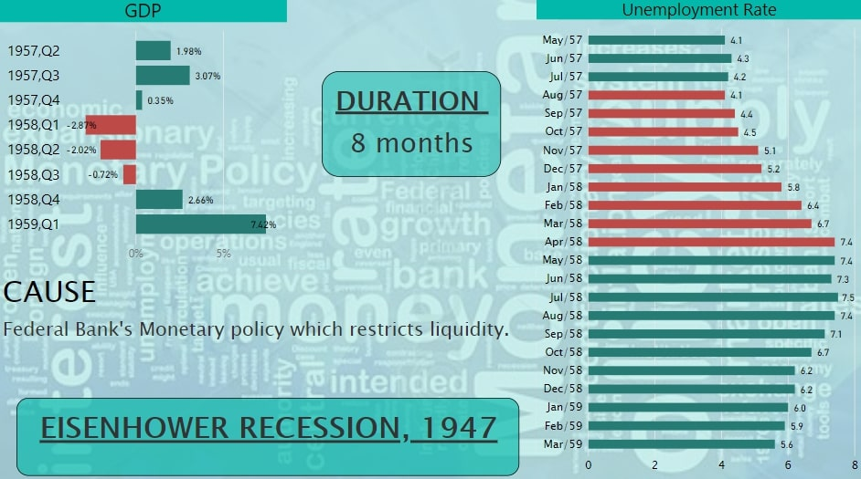

Fig.1
In the United States of America, economic recessions at some interval of time is quite common. But this country always bears with the recession, and comes up with a new United States of America every time.To understand the cause and effect of Recession, it is important to get a deep dive into the history of US Recessions.
Let us first discuss the meaning of Recession. A Recession is a significant decline in economic activities for particular amount of time, usually for more than 5 to 6 months.
Among various factors which are used to determine Recession, two of the major ones are GDP Growth Rate and Unemployment Rate.
Recession leads to lower GDP growth rate. So, if the GDP growth rate of a country is negative for consecutive two quarters, it is considered to be Recession. Along with this, it affects the career growth as well as business survival and growth which increases the Unemployment Rate.
Fig.1
Fig. 1 shows the variation in Unemployment Rate of the USA from 1940 to 2020. In the plot, the Unemployment Rate is increasing continuously and reaching its peak and then, after that, it is declining.The part where the Rate is increasing is due to various Recessions happened in the history of the USA. Let’s discuss some of the Recessions which had a huge impact on the US economy.
This was the biggest recession in US history which lasted for almost 10 years i.e.from 1929 - 1938. The depression took place because of the Stock Market Crash. During the 1920s, the stock market in the US underwent rapid expansion. In order to get profit from high stock prices, Investors rushed to brokers to invest their money.They sold out their bonds and mortgaged their properties to invest in the Stock Market. But, due to the crash in the Stock Market in 1929, people rushed back to sell their stocks which made this market crash even worse. This depression was exacerbated by the increased interest rate on loans by the Federal Bank and a drought in 1930 popularly known as “The Dust Bowl '' .During this period, the Unemployment Rate reached over 20%.
Thereafter, ‘The New Deal’ was enacted by President Franklin Roosevelt during 1933 to 1939 to get back from this destructive Recession.
This Recession began in November 1948 and continued till October 1949. After World War II, in 1945, many civilians returned from the war and entered the workforce again. This increased the Unemployment Rate significantly. Unemployment Rate reached 7.9 %, the highest for this time period, in October 1949.
During this time, the USA Government was concerned regarding another Recession, but inflation proved to be a much greater concern at that time. Fig. 2 shows the variation in Unemployment Rate and GDP Growth Rate in this recession period. We can clearly see how the unemployment rate is continuously increasing with a declining economic growth (a negative GDP).

Fig.2
This recession resulted from demobilization after the end of Korean-War. The act of the Federal Reserve of tightening monetary policy to curb inflation in 1952 and the drastic change in interest rates are mainly responsible for decreased GDP Growth Rate. It lasted for 10 months and led the Unemployment Rate to its peak i.e. 6.1% in October 1954. Fig. 3 shows that the GDP Growth Rate was negative for three quarters in 1954. The Unemployment Rate although decreased after that, but was significantly high even post-recession.

Fig.3
Contractionary Monetary Policy was the main reason behind this Recession. The Bank restricted the liquidity of money and also raised interest rates to make lending expensive so that money supply by banks can be lowered down. This was done in order to ward off inflation. The GDP went down drastically in 1958 first quarter and the Unemployment Rate reached 7.4% in April 1958. We can see the same condition in fig. 4.

Fig.4
The main reason behind this Recession was high prices of oil. These high prices of oil were the result of OPEC (Organization of Petroleum Exporting Countries) Oil Embargo in 1973, a decision to stop exporting oil to the United States. This led to fuel shortages and sky-high prices throughout much of the decade.
This alone was not responsible for the Recession of 1973. Another reason was President Nixon’s policy which included imposition of harmful wage-price controls to control mild inflation. This kept prices too high, reducing demand and forced businesses to lay off workers. Even worse, Nixon ended the Gold Standard which tied the dollar's value to gold. These all factors together created a huge impact on the economy of the US at that time. GDP growth continued to be negative for four consecutive quarters. Unemployment Rate continued to increase even after Recession and reached 9% in May 1975 (two months after recession ended).

Fig.5
The period of 1980-1982 suffered a combination of two recessions. First one lasted for six months (Mar 1980- Aug 1980), while another one lasted for 16 months (July 1981- Nov. 1982).
This long Recession was caused by the Iranian Revolution of 1979, which sparked a second large round of oil price increase. It was also triggered by the tight monetary policy of the Federal in an effort to fight mounting inflation occurred by the previous Oil Crisis.
Economy began to crush in the second quarter of 1980 and started reviving just after October 1980. But in 1982, economy took a turn and dropped by a large percentage reaching the peak of Recession in November when the Unemployment Rate was 10.8%, the highest since the Great Depression.

Fig.6
President Ronald Reagan's economic policy of cutting taxes on the very wealthy, resulted in economic boom as well as insufficient funding of expenditures. This policy eventually led to large deficits and played a role in 'Black Monday' and ‘the Stock Market Crash of 1987’.
The Federal Reserve Bank believed that this crash would continue to cause problems. Therefore, it embraced a monetary policy, to curb inflation and stabilize prices. Instead of economic growth, it became one of the major causes of Recession 1990.
This Recession lasted for 9 months from July 1990. Although it ended in March 1991, the Unemployment Rate continued to rise for months after recession. Fig. 7 shows the unemployment rate and GDP growth rate for this Recession.

Fig.7
The Economic Fall down in 2001 was the outcome of the collapse of the Internet Bubble. It was a rapid rise in U.S. technology stock equity valuation because of a boom in dot-com businesses. Companies invested a lot in new software, thinking that it would be helpful in the transition from 1900 to 2000 century. But unfortunately, dot-com businesses failed at that time which triggered this Recession.
This situation was exacerbated by the attack on the World Trade Centre on September 9, 2001.
Although in this economic fall down, GDP growth rate didn’t fall to negative but it increased unemployment by a significant percent.

Fig.8
Since 1929, the Great Recession, 2009 was the worst financial crisis in the history of the United States. This Recession lasted for around 20 months from January 2008 to June 2009. The GDP Growth Rate was negative for four consecutive quarters and even with higher rates.
Housing prices in the US tailed off drastically around 2006 because of the Home Loans given to subprime borrowers. This was the main reason for this recession. The Federal bank in the early 2000’s started to give home loans on low interest rates. Investment Banks gathered Mortgages and Bonds from these loan borrowers, formed CDOs (Collateralized Debt Obligations) and opened it for other investors to invest in it. Investors were confident in investing in these CDOs as it was backed up by the Federal Bank. Now, to feed the rapid rise in demand for CDOs, loans were made available to even subprime borrowers who were more likely to default.
However, from 2004, the Federal Reserve Bank steadily increased interest rates in an attempt to maintain a stable rate of inflation in the economy. The rates on existing adjustable mortgages began to reset at much higher rates than many borrowers expected. The result was the bursting of what was later widely recognized to be a housing bubble. All the investors from all over the world had a great loss in this CDOs investment. Lehman Brothers even declared bankruptcy. Also, there was a Stock Market Crash in 2008 which pushed this recession into worse condition.
Altogether, this was one of the biggest economic crises in the US since the Great Depression. From fig. 9, we can see that GDP reached its minimum in 2nd quarter of 2009 and unemployment climbed up to 10% which is very high.

Fig.9
From the past 4-5 years, the upcoming recession of 2020 is the major topic of discussion. Looking at the market, Economists have estimated that the recession will come in mid 2020 and will create a huge loss to the economy if the government doesn’t take major steps. From the economy graph of 2019, in the beginning of January, it has been said that the recession of 2020 can be avoided.
But because of the COVID-19 pandemic, economy of the US took a bad turn and in the first quarter of 2020, United States GDP declined by 4.8%.
Due to COvid 19, there is still a complete lockdown and implementation of social distancing in almost every country. This is the major reason for unemployment and economic downfall. Right now, the country is also facing an oil price crisis due to imbalance in supply and demand. The United States is in very bad condition currently as it is dealing with thousands of deaths in a day. On the other hand, if it goes for complete lockdown, the economy is going to suffer a lot.
Major Signs of US RECESSION 2020:
1. GDP declined by 4.8% in 1st quarter of 2020.
2. As of May 4, more than 30 million people in the US have filed for unemployment insurance and layoff is continuously increasing.
3. The US economy has already been hit by negative oil prices.
4. Small businesses are shutting down rapidly.
5. Travel industry is completely on hold.
6. International trade is minimized due to safety measures.
7. Loss of manpower. As of May 5, US has more than 72K deaths and 1.25M confirmed cases of Covid-19.
Looking at the current scenario, nothing can be predicted about the period of lockdown. It is May already, If we get out of this disease by the end of June or July, we will still be having hope of getting the economy on track soon.
But, if more time is taken to fight Covid-19, then it will be very difficult to make GDP Growth Rate positive. Analyzing the visualizations of previous Recessions and today’s condition, we can predict that Unemployment will rise up to 20% in this recession. Moreover, this recession might stay for more than a year.
In Conclusion, if COVID-19 continues to spread, the US recession of 2020 can turn into a deep Recession and can cause more damage than the Great Recession of 2009. So for now, we can just hope for betterment and pray for the lives of people who are fighting with this covid.